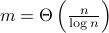
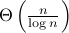
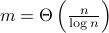
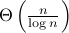
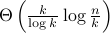
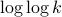

Research
Information Theory
1. Data extraction via histogram and arithmetic mean queries: fundamental limits and algorithms
We consider the problem where a database server encounters an user that look to extract all the data from the database. In order to preserve privacy of the data, the database protects the data by responding to queries with histograms. We analyse the fundamental limits and algorithms for the user to extract all data losslessly. We show that the fundamental limit on the number of histogram queries,  , is , sub-linear in the size of the data set. Further, we construct a random sampling algorithm and a deterministic algorithm that is asymptotically tight with this converse bound. We then extend the results to arithmetic mean queries, and show that for data sets taking values in a real-valued finite arithmetic progression, the fundamental limit on the number of arithmetic mean queries to extract the entire data set is also  queries.
, is , sub-linear in the size of the data set. Further, we construct a random sampling algorithm and a deterministic algorithm that is asymptotically tight with this converse bound. We then extend the results to arithmetic mean queries, and show that for data sets taking values in a real-valued finite arithmetic progression, the fundamental limit on the number of arithmetic mean queries to extract the entire data set is also  queries.
2. Extracting sparse data via histogram queries
We continue our investigation on the problem of extracting a sparse data set via histogram queries. A data set is called sparse if there are only a small number of items carrying data of interest. We show that the fundamental limit on the query complexity is , where n is the size of the data set and k < n being the sparsity level. A counting argument is used to establish the converse (lower bound) on query complexity. We propose a random sampling algorithm that recovers the dataset with high probability with asymptotically tight complexity. Furthermore, we propose an adaptive deterministic algorithm to extract the sparse data set with complexity, , achieving the fundamental limit to within a  factor.
3. Information-theoretic methods in DNA shotgun sequencing analysis
We surveyed papers on information-theoretic methods in DNA shotgun sequencing under different settings.
4. Caching for multiple file requests
We investigated the problem of pre-caching data in user caches to aid information transmission during “peak times”.
Computer Vision
1. Partial image blur detection and segmentation with a single image
Photos and images often consist of multiple objects, which are subject to varying types of blur, such as defocus blur or motion blur. We were interested in detecting, segmenting, and classifying regions under influence of different blur kernels, and estimate the underlying blur kernel. We designed an algorithm that could achieve both blur detection and segmentation with a single input image.